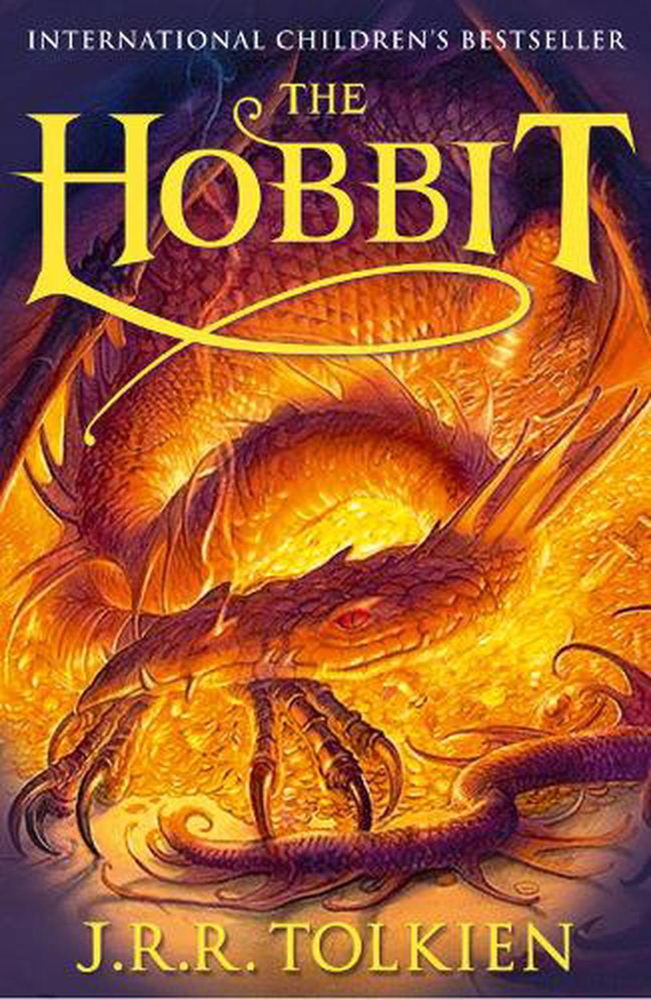

The Hobbit
Író: J.R.R. Tolkien Kiadás: 1937
A történet középpontjában a hobbit nevű lény, Bilbo Baggins áll, akit egy váratlan kalandra hívnak el tündék és törpök társaságában. A könyv 1937-ben jelent meg, és azóta is klasszikusnak számít a fantasy irodalomban, lenyűgöző világával és izgalmas kalandjaival.
J.R.R. Tolkien

Foglalkozása: Író Született: 1892-1973
J.R.R. Tolkien (John Ronald Reuel Tolkien) angol író, filológus és egyetemi tanár volt, aki a fantasy műfaj egyik legmeghatározóbb alakja. Tolkien a "Gyűrűk Ura" trilógiájával vált világszerte ismertté, de munkásságában számos más fontos művet is alkotott. Ő alkotta meg a középföldei (Middle-earth) mitológiát és nyelveket, amelyek a fantasztikus irodalom későbbi alkotásait is erősen befolyásolták.Tolkien munkássága az irodalomtudomány és a fantasy műfajának kialakításában is mély nyomokat hagyott. A Nyugati Gyűrűkért (The Lord of the Rings) 1954-ben és 1955-ben elnyerte a Carnegie Medal for Fiction-t, és széles körben elismerték az irodalmi értékeiért, valamint a fantastikus világokba való mély betekintésért. Tolkien 1892. január 3-án született, és 1973. szeptember 2-án hunyt el.